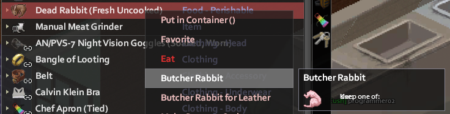

Welcome to the official Kush Faction Wiki for Project Zomboid!
I created this wiki for two reasons:
- To act as a knowledge base specifically for the members of the Kush Faction
- Because I dislike searching for things on the official A Path Above wiki and Discord server
If an existing faction member ever forgets something important, or a new faction members must be brought up to speed, this wiki can serve as a helpful introduction to our faction. This wiki will be updated when I feel that new content must be added to it, or if any faction members feel that some information must be on here.
You can navigate this wiki with either a desktop or mobile device:
- Mobile device: tap on the hamburger menu (3 horizontal lines atop one another) on the top left side of the screen to open the navigation menu. Then, then tap on a section to navigate to.
- Desktop: The navigation menu will always be on the left side of the screen. Click on any desired section.
Learn How to Make Unspoilable Lasagna
Unspoilable lasagna is the main food of the Kush Faction. Below is a very detailed guide on how to make these. If you have any further questions, reach out to the faction member mainly responsible for making these, and they will show and/or tell you how to make them. Keep in mind, the person who primarily makes the lasagna should have a high cooking level and the nutritionist trait. The nutritionist trait will tell you immediately if you are making lasagna that is worth it (high calories), and the high cooking level will reduce the amount of ingredients used to make the lasagna. At level 10, a chef uses 70% of the ingredients somebody at level 0 would use, and makes pasta 17% more nutritious.
Character requirements:
- Cooking level 8
- Ability to access and search Craft Helper
Resources:
- 1+ Roasting Pan
- 1+ Rolling Pin
- 1+ Empty Bowl
- 1+ Knife, Machete, etc.
- 1+ bag(s) of flour
- 4+ units of water
- Ingredients to fill the lasagna with
- (For making pasta dough): 2+ eggs
Steps:
Disclaimer: You MUST have access to and know how to utilise Craft Helper to follow this guide. All screenshots in this guide use Craft Helper to reference things.
- First, gather all the resources you need and have them in close enough proximity to you. Reference the list above to see what you need.
- Next, you want to make some Seitan. In Craft Helper, type in 'Make Seitan' into the search field. This should bring up a single result in the search menu that shows you the steps on how to make Seitan, as referenced below:
- After crafting the Seitan, you will have one in your inventory. It must show (Uncooked), and not (Fresh Uncooked):
- Now, you will need to grind this Seitan into minced chicken. This minced chicken is the ingredient that makes the lasagna have no freshness status. Right-click on the Seitan in your inventory, and under the tool tip menu that displays, there should be the option 'Grind Chicken':
- After creating the minced chicken, you will have one in your inventory. It must show (Uncooked), and not (Fresh Uncooked):
- Next comes the time to get what you want to put into the lasagna. The Kush faction uses rabbits for the lasagna because they are easy to get and provide a ton of calories and give small stress and unhappiness buffs in the lasagna. To begin, you need to butcher all the rabbits you have into rabbit meat, as shown below. Remember to have a blade weapon in your inventory:
- 
- Butchering a rabbit will yield rabbit meat. Next, you want to turn roughly half of the rabbit meat you get into ground beef. This is because putting more than 3 of 1 ingredient into anything you cook will yield a happiness and boredom debuff. If you are able to get 10 rabbit meat from traps, ground 5 of them into ground beef, and keep the other 5 as rabbit meat. You can grind rabbit meat into ground beef using a manual meat grinder as shown below:
- Next, we have to make some pasta sheets. These are one of the main ingredients of lasagna. To begin making these, you have to first make pasta dough. Search it in Craft Helper in a similar fashion as how you did with the Seitan
- Next, after you have the pasta dough made, you have to roll the pasta dough out using a rolling pin, as the following screenshot shows:
- After that, once you have some rolled pasta dough in your inventory, have a bladed weapon in your inventory and cut the rolled pasta dough into pasta sheets, as shown below:
- Finally! You have all your ingredients created and tools together, now it is time to profit from all that work. Begin by having minced chicken, pasta sheets, and a roasting pan in your inventory, right-click the roasting pan, and select the tool tip option 'Make Pan of Lasagna', as shown below:
- If everything works out well, this will result in a Roasting Pan with Lasagna (Uncooked). If it does not work out, re-read the previous instructions and find out where you went wrong, or ask the faction member who makes lasagna. The resulting item should look like the following:
- Now that you have the lasagna, feel free to add any ingredients to it. You do this by right-clicking on the lasagna, and there should be an option that you can hover over, and it will show you a list of what ingredients that are either nearby or in your inventory that can be added to the lasagna. The Kush faction uses the aforementioned rabbit meat and ground beef as ingredients in the lasagna for efficiency, as they are easy to get. Additionally, you can also use oil from avocado. In any case, the resulting lasagna with rabbit meat and ground beef added should look like the following:
- The lasagna can be cooked in any oven in the game at 500 Fahrenheit with the timer set to 20 minutes, as shown below:
- After you have cooked the lasagna and have it in your inventory, now it is time to slice it into 4 pieces. Hold the lasagna in your inventory, have a bladed weapon nearby or in your inventory, and click the tool tip menu 'Cut Lasagna Piece'. This will cut 4 pieces of lasagna. DO NOT click the other option 'Cut Lasagna Pieces', as this will make 8 pieces that have poor nutrient count:
- Feel free to differ in the ingredients added to the lasagna if you find anything else that is better.
Learn How to Make Unspoilable Dumplings
This is the dumpling section
Learn Which Crops Are Most Useful for Our faction
This is the most useful crops section
Learn How to Make Propane by Using an IBC
This is the propane section
Learn How to Make Gas Using Apples, Sugar, Yeast, and a Distillery
This is the gas section